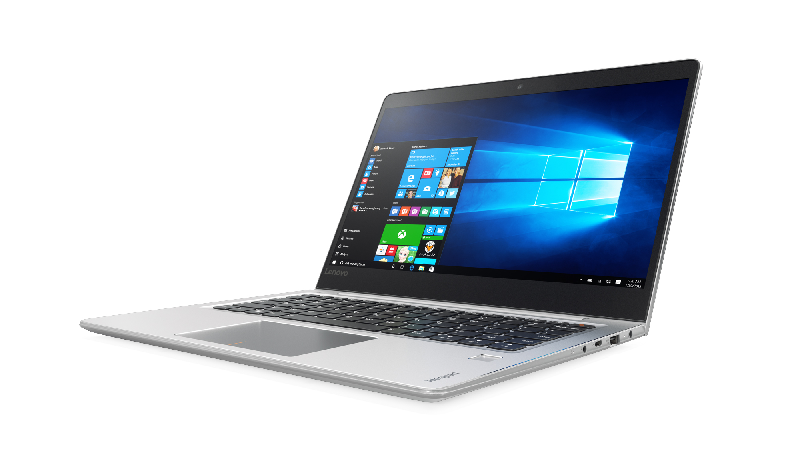
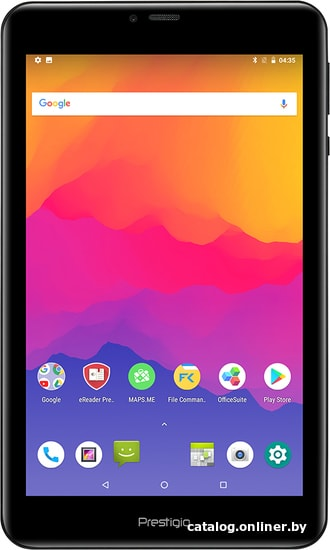
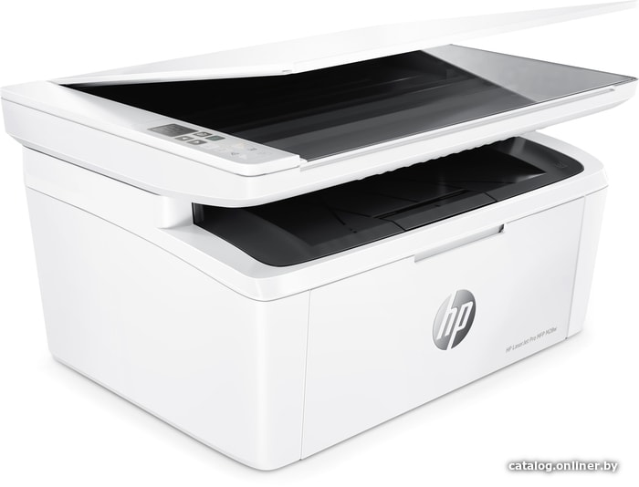
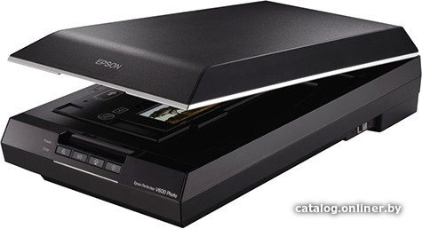
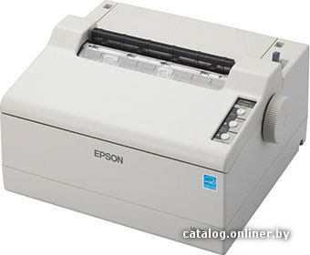
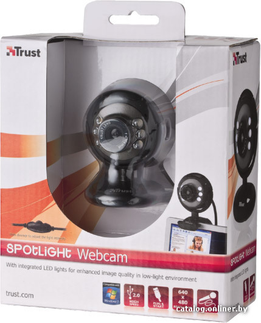
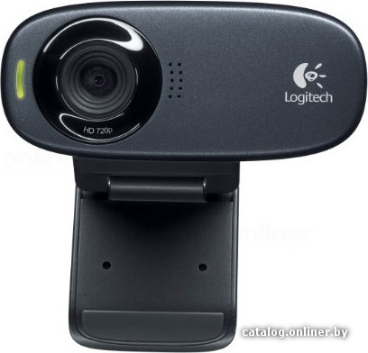
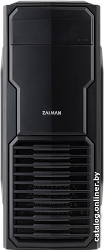
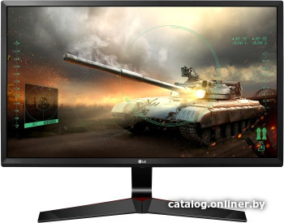

Мы предлагаем большой выбор компьютеров и комплектующих, ноутбуков, электроники,аудио техники,
Есть товары в наличии и под заказ.Доставка курьером в Минске осуществляется бесплатно.
| Название товара | Тип товара | Описание | Рейтинг | Цена |
|---|---|---|---|---|
| Lenovo Graphics 1525  |
Ноутбук | (HDD),Intel HD Graphics 500, без ОС | 5 | 687.00 бел.руб. |
| Prestigio Grace 5588  |
Планшет | 8.0"1200), Android, MediaTek MT8735, ОЗУ 2 ГБ, флэш-память 16 ГБ, LTE, цвет черный |
4 | 286.00 р. |
| МФУ HP LaserJet Pro  | МФУ | МФУ, лазерный, черно-белый, формат A4 (210x297 мм), скорость ч/б печати 18 стр/мин, разрешение 600 dpi, Wi-Fi | 5 | 329 р. |
| Cканер Epson Perfection V600  |
Cканер | планшетный,CDD датчик 48 бит,формат A4 | 4 | 466 р. |
| Матричный принтер Epson LQ50  |
Принтер | 1 отзыв Оставить отзыв
< A4 (21.6x28), 24 иглы, 50 колонок, скорость 360/75 зн/с, до 2 копий | 4 | 412 р. |
| Web Trust SpotLight  |
Веб-камера | матрица 2 Мп, автофокус, кабель 0.6 матрица 2 Мп, автофокус,кабель 0.6 м | 3 | 31 р. |
| Logitech HD Webcam  |
Веб-камера | матрица 1.3 Мп, кабель 1.5 м | 4 | 72 р. |
| Irwin Computers VEGA  | Системный блок |
офисный, CPU AMD FX 4-Core 4300 3800 МГц, RAM DDR3 8 ГБ, HDD 1000 ГБ | 4 | 825 р. |
| Монитор LG 24MP59G-P  |
Монитор | 23.8'', 16:9, 1920x1080, IPS,75 Гц,FreeSyn5 | 5 | 325 р. |
Монитор LG 22MK4-B |
Монитор | 21.5", 16:9, 1920x1080, IPS, 75 Гц, FreeSync,интерфейсы HDMI+D-Sub (VGA) | 5 | 219 р. |
+375290101010 г.Минск, пр. Независимости 40, время работы с